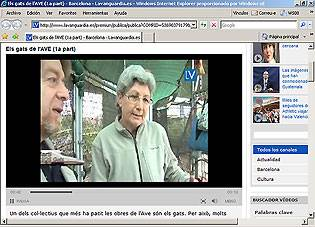
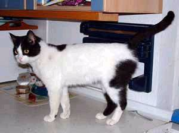

|
opinions | ||||
|  | Els
gats de l'AVE (1a part) La Vanguardia Digital |
Un dels col·lectius que més ha patit les obres de l'Ave són els gats. Per això, molts veïns han decidit salvar centenars de petits felins que s'estaven quedant sense casa. Així ha nascut SOS Gats, una associació sense ànim de lucre que té relació amb d'altres agrupacions de tot el món dedicades a vigilar els animals urbans. En aquest tretzè capítol, Jordi Miró ha anat a visitar-los. Dani Clavera 5 de maig 2009 |
 |  |  |  |